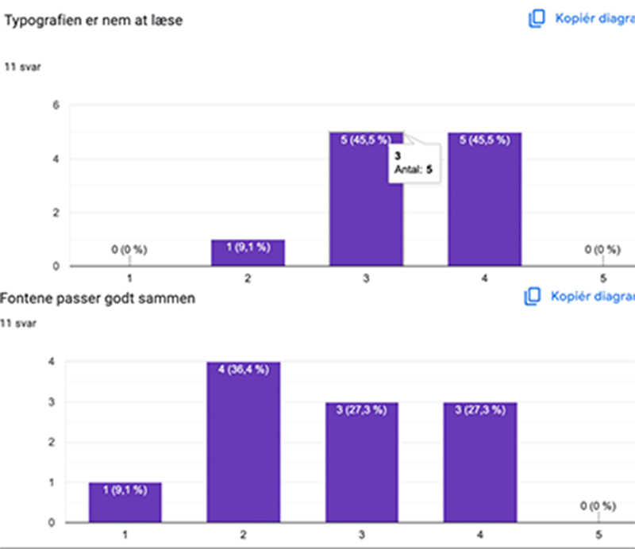
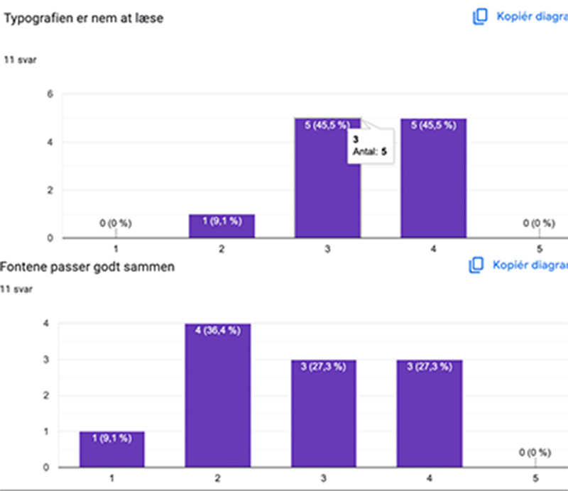

Tema 6 - Portfolioeksamen
I tema 6 har jeg arbejdet med at skabe min egen personlige (eksamens-)hjemmeside - et digitalt visitkort, hvor jeg kombinerer min tekniske viden med min kreative identitet.
Løsning
Min løsning er en responsiv, brugervenlig og æstetisk portfolieside, som både præsenterer mine projekter og min personlighed. Designet understøtter dark/light mode, og layoutet tilpasser sig forskellige skærmstørrelser. Jeg har valgt farver, billeder og typografi, der afspejler mit kreative udtryk og mine grønlandske og danske rødder. Undervejs valgte jeg at skifte skrifttype fra Lobster til Kiwi Maru for at opnå bedre læsbarhed og et mere roligt visuelt udtryk.
Proces
Jeg startede med at designe i Figma med fokus på farver, typografi og layout. Herefter byggede jeg siden med HTML, CSS og JavaScript, baseret på mobile-first-princippet. Jeg brugte CSS-variabler og JavaScript til dark/light mode og arbejdede med Flexbox og Grid for at sikre et responsivt layout. Jeg testede designet løbende og lavede en Likert-test med 11 deltagere for at få feedback på styletilen. Resultaterne viste, at brugerne oplevede designet som personligt, gennemarbejdet og let at læse, hvilket førte til fontskiftet.
Likert-test på Styletile
Jeg lavede en Likert-test med 11 deltagere for at evaluere min styletile. Feedbacken viste, at designet blev opfattet som personligt, indbydende og let at læse. På baggrund af svarene valgte jeg at skifte skrifttypen fra Lobster til Kiwi Maru for at forbedre læsbarhed og give et mere roligt og professionelt udtryk.
 

Læring
Jeg har lært at bruge brugerfeedback aktivt i designprocessen og erfaret, hvordan selv små ændringer som skrifttypevalg kan påvirke oplevelsen markant. Jeg har styrket mine evner inden for responsivt design, dark/light mode og visuel identitet – og fået indsigt i, hvordan man formidler personlighed digitalt på en autentisk og brugervenlig måde.